Explore Washington D.C., DC
A Brief History
Washington was established in 1790 as the permanent seat of the United States government on the Potomac River, with Pierre Charles L'Enfant's plan organizing radiating avenues around the Capitol and White House. Federal monuments, museums, and civic buildings expanded through the 19th and 20th centuries as the capital grew with wars, civil rights struggles, and national commemoration. Reclaimed waterfront, Metro lines, and embassy quarters reshaped movement through the city.
Attractions Map
Top Sights & Activities
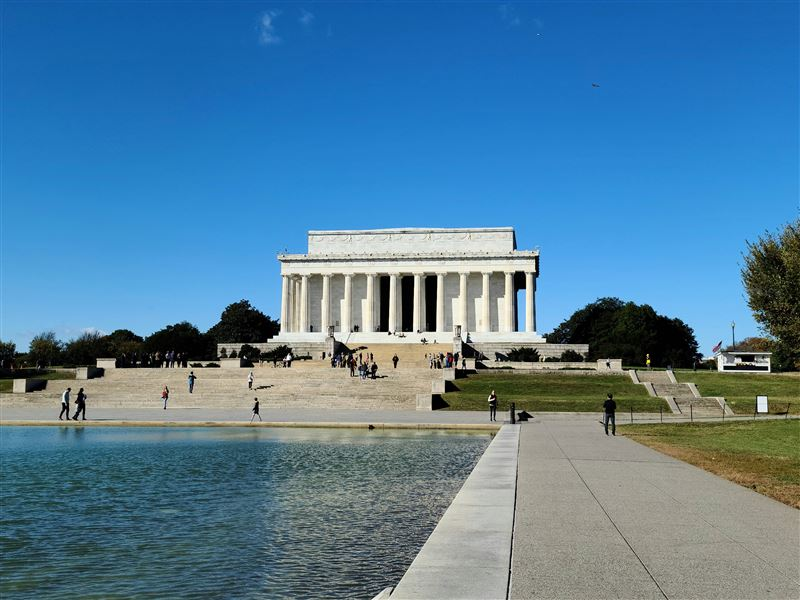
Lincoln Memorial
The Lincoln Memorial was dedicated in 1922 on the west end of the National Mall. Henry Bacon's Greek temple shelters Daniel Chester French's seated Lincoln and inscriptions of the Gettysburg Address and Second Inaugural. Steps overlook the Reflecting Pool toward the Washington Monument.
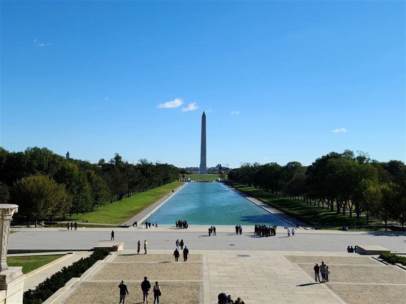
Washington Monument
The Washington Monument is a 555-foot marble obelisk completed in 1884 to honor George Washington. An elevator carries visitors to an observation level with views over the Mall, Potomac River, and federal city. Tickets are required for entry.
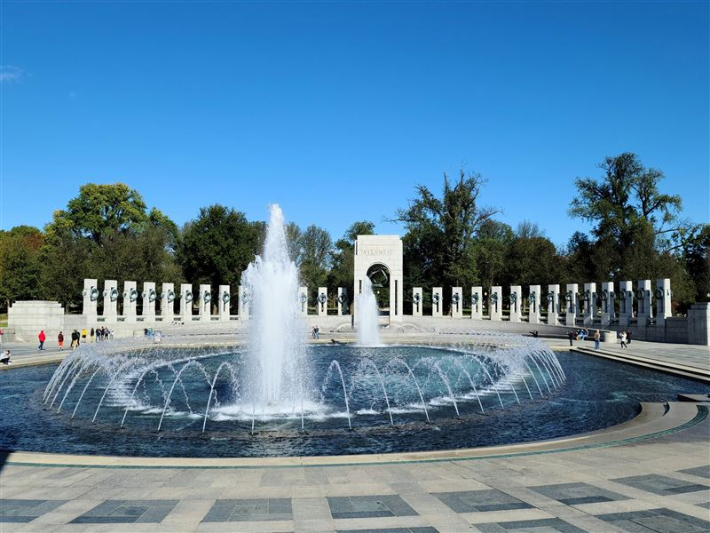
World War II Memorial
The National World War II Memorial opened in 2004 between the Washington Monument and Lincoln Memorial. Granite pillars represent states and territories, while fountains and bronze panels commemorate the armed forces and home front of the 1941–1945 war.
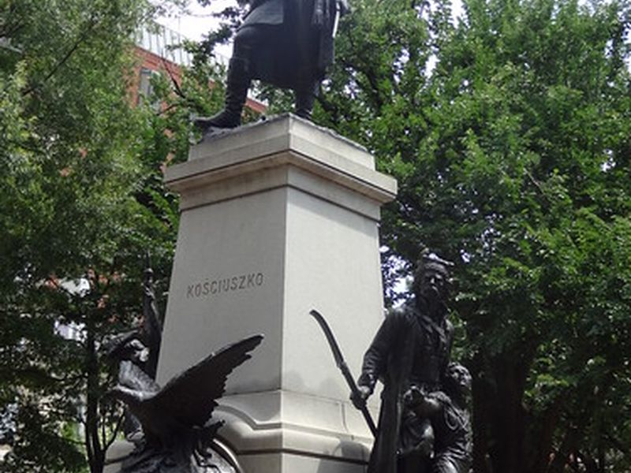
Thomas Jefferson Memorial
The Thomas Jefferson Memorial was completed in 1943 in West Potomac Park. John Russell Pope's circular colonnade frames a bronze statue of Jefferson and excerpts from the Declaration of Independence and other writings. Cherry trees surround the Tidal Basin setting.
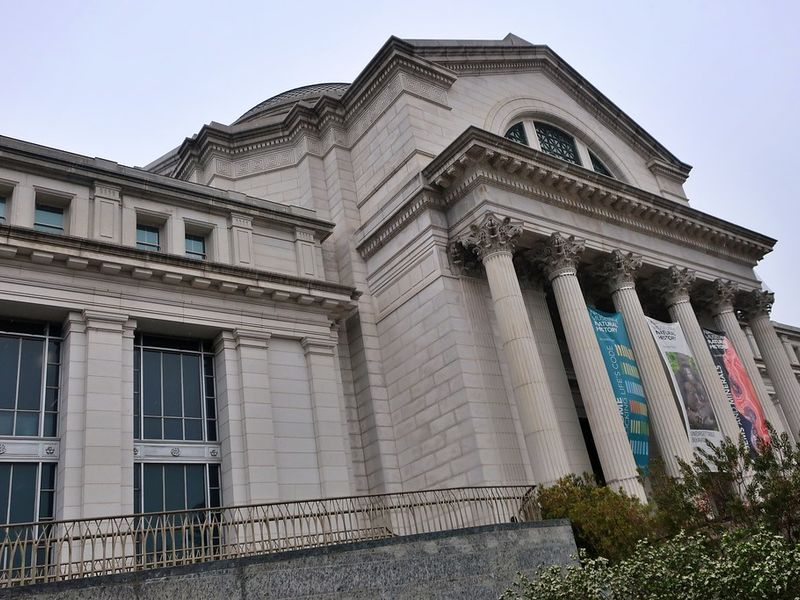
Smithsonian National Museum of Natural History
The National Museum of Natural History opened on the National Mall in 1910 as part of the Smithsonian Institution. Its halls present fossils, minerals, cultural collections, and the Hope Diamond within one of the most visited museums in the United States.
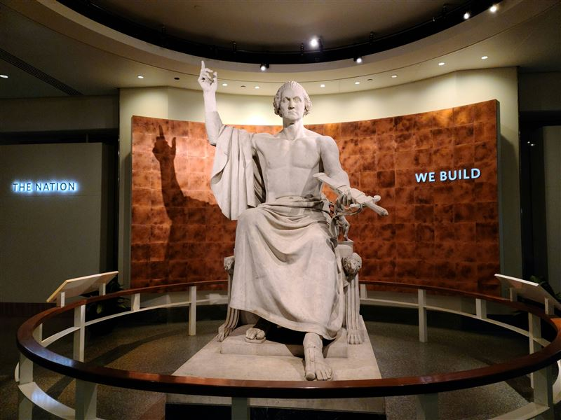
Smithsonian National Museum of American History
The National Museum of American History collects objects that record political, social, and technological change in the United States. Exhibits include the Star-Spangled Banner, presidential artifacts, and displays on industry, entertainment, and daily life.
National Gallery of Art
The National Gallery of Art comprises the 1941 West Building and 1978 East Building on the Mall. Federal patronage created a collection spanning European old masters to modern American painting and sculpture, with a sculpture garden along Pennsylvania Avenue.
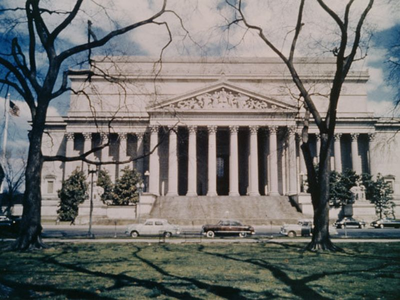
National Archives Museum
The National Archives Museum displays the Declaration of Independence, Constitution, and Bill of Rights in the Rotunda for the Charters of Freedom. The building on Constitution Avenue also houses public research facilities for federal records.
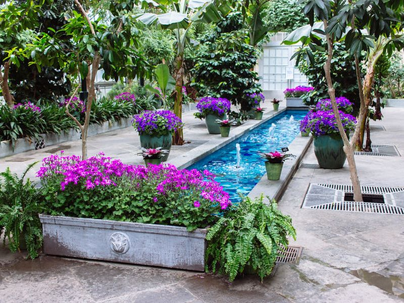
United States Botanic Garden
The United States Botanic Garden was established by Congress in 1820 near the Capitol. Conservatory greenhouses, outdoor gardens, and seasonal displays present plant collections for education and conservation on the Capitol grounds.
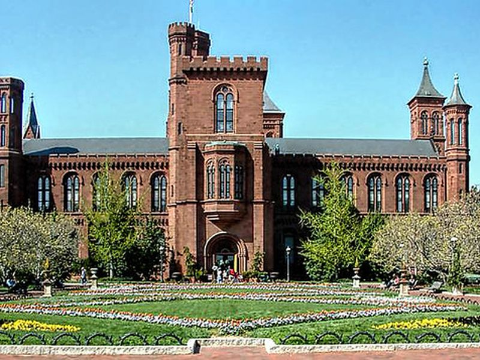
Smithsonian Castle
The Smithsonian Castle, designed by James Renwick Jr., opened in 1855 as the first Smithsonian building on the Mall. Its Gothic Revival towers now serve as a visitor center with orientation exhibits for the surrounding museums.
United States Capitol
The United States Capitol houses the Senate and House of Representatives. Its neoclassical wings and cast-iron dome, completed in the 19th century, anchor the east end of the National Mall. Public tours include the Rotunda and Statuary Hall.
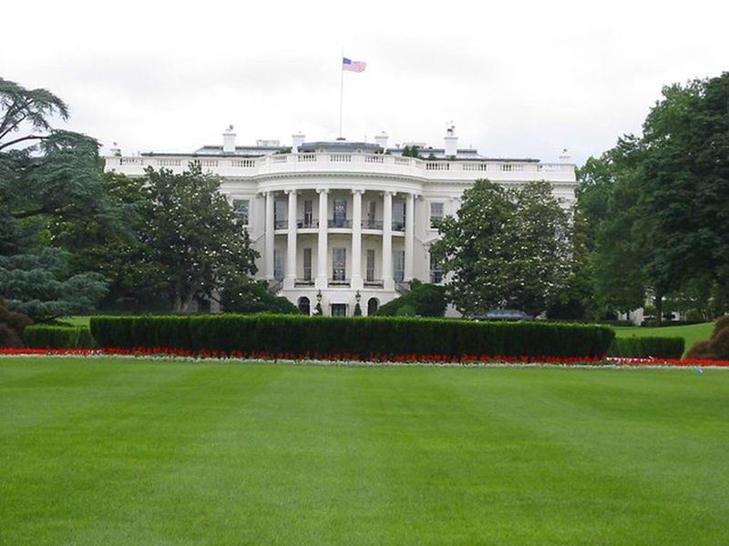
The White House
The White House has served as the president's residence since 1800, though rebuilt after the War of 1812. Public tours of the historic rooms require advance requests through congressional offices and cover the State Floor on Pennsylvania Avenue.
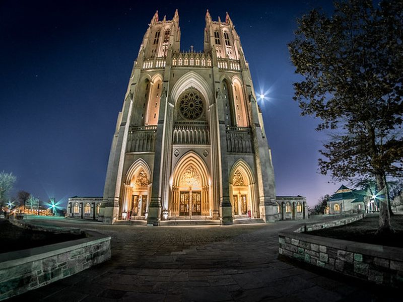
Washington National Cathedral
Washington National Cathedral is an Episcopal cathedral begun in 1907 and completed in the late 20th century on Mount Saint Alban. Gothic-style stonework, stained glass, and gargoyles mark the highest point in the District of Columbia.
Smithsonian National Zoological Park
The National Zoo was founded in 1889 and occupies Rock Creek Park in northwest Washington. Smithsonian conservation programs support giant pandas, big cats, and other species in outdoor habitats linked by walking paths.